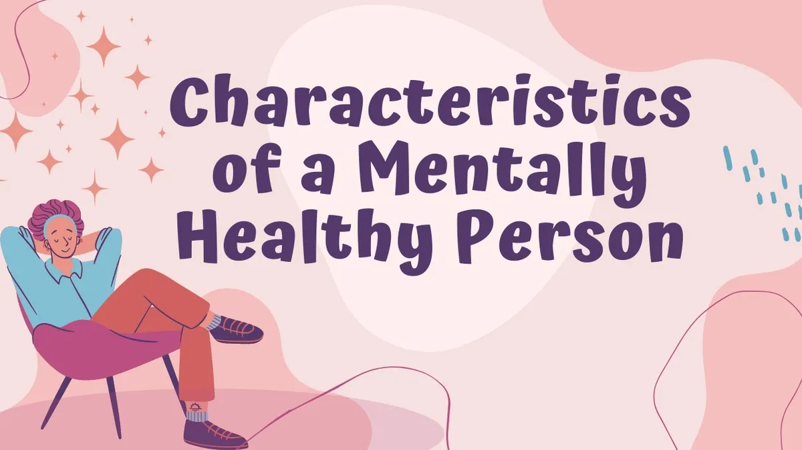
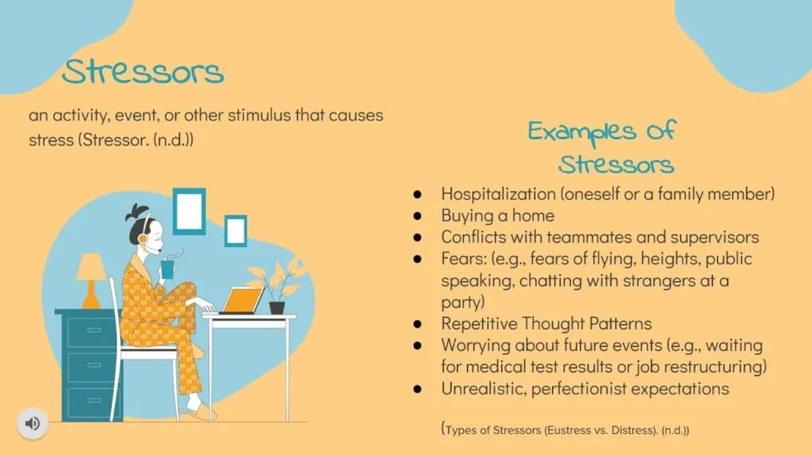
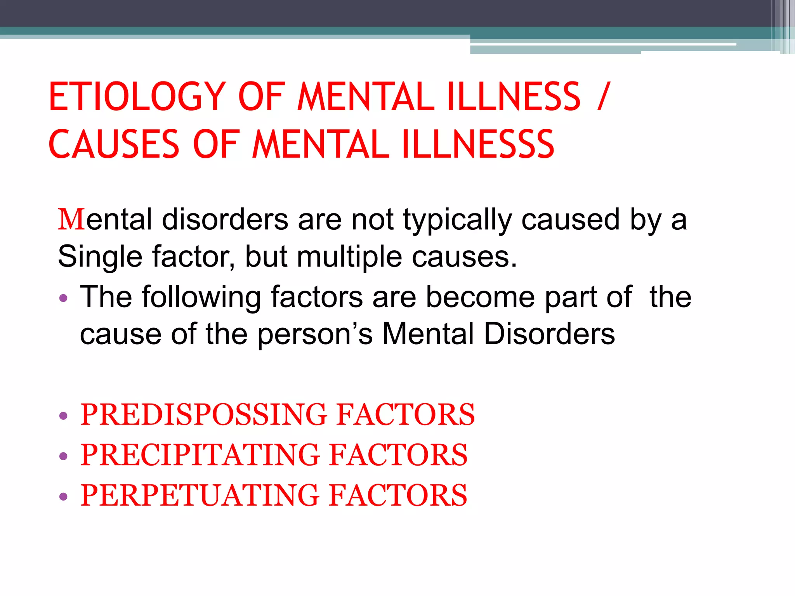
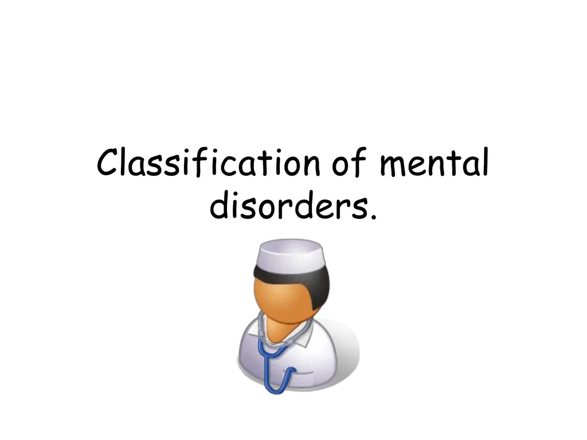
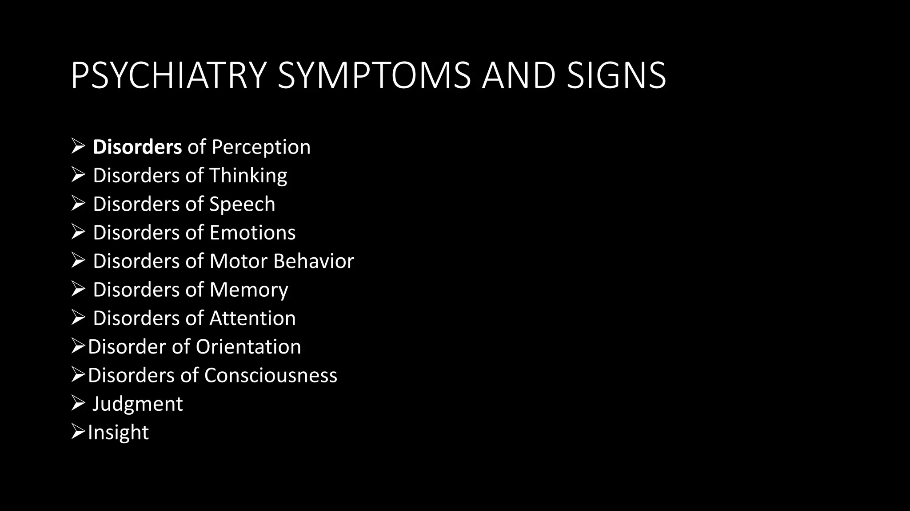

Expanded Nursing Uganda Explanation
Review of mental functioning should be understood beyond a short definition. Link the concept to patient history, focused assessment, common risks, nursing priorities, documentation and evaluation of outcomes.
Contents, 13 sections (tap to expand)
01 BNS 113: Health Assessment
A comprehensive guide to patient assessment, covering interviewing skills, physical examination techniques, mental status evaluation, and the interpretation of laboratory and diagnostic studies.
02 Course Content
Explore the detailed topics covered in Health Assessment.
03 Key concepts and the nursing process
- Definition of concepts
- Types of health assessments
- Nursing process components
- Health assessment tools
- Therapeutic communication
- Symptom analysis
04 Interviewing skills and health history
- Purposes & principles of interviewing
- Health history format
- Investigations during history
- Recording a client's health history
- Self/peer analysis of weaknesses
- Practice interviewing a client/peer
05 Assessment of the mental status
- Review of mental functioning
- Assessment of appearance & behavior
- Evaluation of mood
- Assessment of thought process
- Evaluation of cognitive function
06 Physical Examination Technique
- Inspection, Percussion, Palpation, Auscultation
- Equipment for physical examination
- Sequence for general assessment
- Composing overall impression
- Documentation of findings
07 Systemic Physical Examination
- Skin, Head, Eyes, Ears, Nose, Mouth
- Thorax and Lungs
- Cardiovascular & Peripheral Vascular
- Axilla and Genitalia
- Abdomen, Anus, and Rectum
- Cranial Nerves & Spinal Nervous System
08 Assessment of special populations
- Pregnant Woman
- Pediatric Patient
- Mentally Ill Patient
- Elderly Patient
09 Laboratory and diagnostic studies
- Full Blood Count (FBC)
- Blood Slide for Malaria
- HB, ESR, PCV
- Urinalysis, Stool Analysis
- Acid Alcohol Fast Bacilli (AAFBs)
- Blood Grouping & Cross Matching
- Culture & Sensitivity, Serology
- X-Ray, MRI, Ultrasound
- Electrocardiograph (ECG)
- Electrolytes & Hormone Levels
- Renal & Liver Function Tests
A selection of key texts and resources cited in this course unit.
- Jarvis, C. (2007). Physical Examination and Health Assessment . Philadelphia, W.B. Saunders
- Bickley, L.S. (2008). Bates guide to physical examination and history taking . Lippincott
- Dains, J.E. (2007). Advanced Health Assessment and Clinical Diagnosis . Mosby Publishers
- Kozier, B., Erb, G., Blais, K. & Wilkinson, J. M. (2007). Fundamentals of nursing . Addison
- Dillon, M. P. (2007). Nursing Health Assessment . Philadelphia. F.A. Davis
- Barkauskas, V.H., et al (2001) Health and physical Assessment . Mosby-Year Book Inc.
- Wilson, S.F. & Giddens, J.F. (2008). Health Assessment for nursing practice . Mosby, Elsevier
10 Nursing Uganda Clinical Lens
Use Definition of concepts as a practical nursing topic, not only a memorized definition. Turn the topic into practical nursing knowledge: meaning, assessment, care priorities, teaching and evaluation.
- What to understand first: define definition of concepts, identify the normal or expected pattern, then explain what changes when the patient is unwell.
- Why it matters in care: the nurse must recognize risk early, explain findings clearly, document accurately and know when to escalate.
- How to revise it: connect each point to assessment, nursing diagnosis or care problem, intervention, rationale and evaluation.
11 Assessment Guide
- Key definitions, patient history, focused observations and risk factors.
- Findings that are normal, abnormal or urgent.
- Resources, referral needs and documentation requirements.
12 Nursing Priorities, Rationales and Outcomes
- Protect safety, comfort, dignity and infection prevention.
- Provide clear care, education and escalation when needed.
- Evaluate response and record what changed.
The rationale for these priorities is patient safety: nursing actions should prevent deterioration, reduce discomfort, support recovery and create clear evidence for the next caregiver.
- Expected outcome: The topic is understood in a way that supports safe nursing judgement and revision.
13 Patient Teaching and Revision Check
- Explain definition of concepts in simple language the patient or caregiver can repeat back.
- Teach warning signs, medicine or follow-up instructions, hygiene or lifestyle points where relevant.
- For exams, prepare a short answer using: definition, causes or risk factors, signs, assessment, management, complications and prevention.
- For ward practice, document baseline findings, actions taken, patient response and the plan for review.
Illustrations and Diagrams (21)






13 more diagrams available, open the lesson for full illustrations.
Related Video Lectures
Watch nursing lecture videos on YouTube for this topic. Opens in a new tab.
Watch on YouTubeExternal link: YouTube may use its own cookies and terms. Nursing Uganda is not affiliated with YouTube.